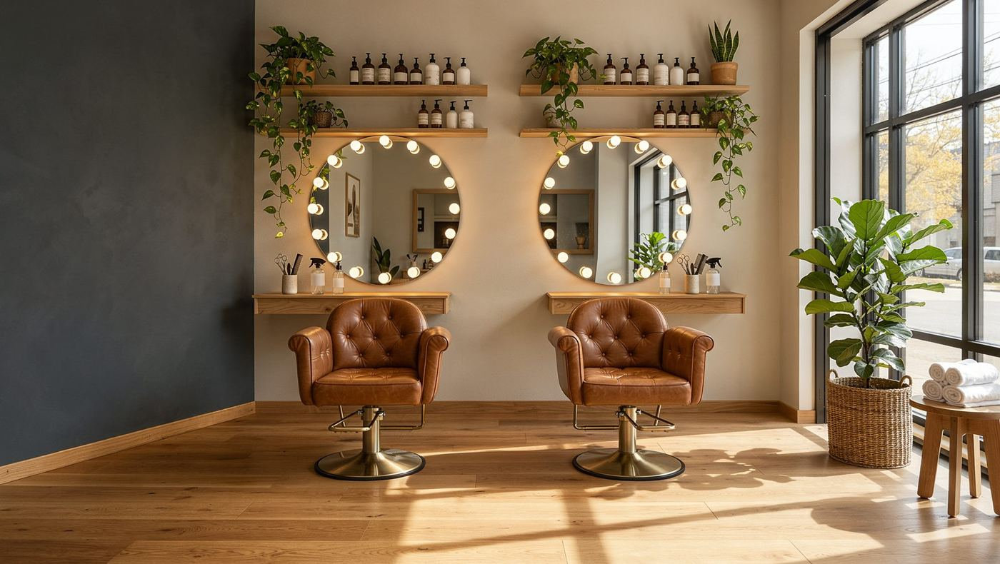
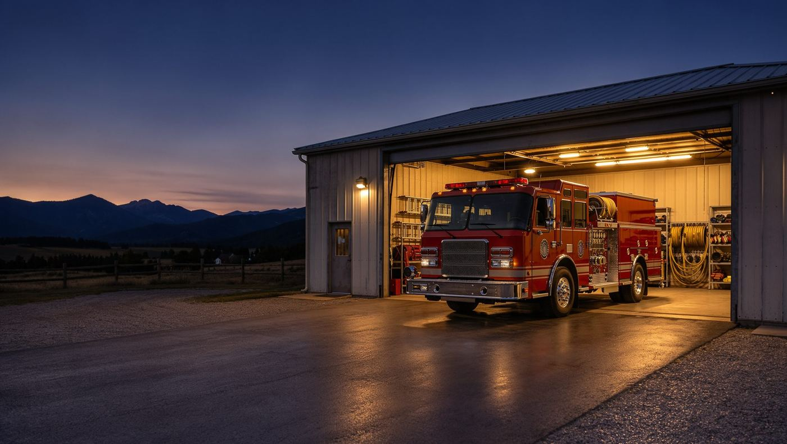

Yough Valley Hair Co.
A good chair is worth booking.
A two-chair salon in Oakland, Maryland. See every free slot for two weeks, pick who you’d like, answer a few questions, and hold the time.
Book a chairsalon.potomac.solutions

Pine Hollow Volunteer Fire Company
Here when the tones drop.
A volunteer company in a made-up mountain town. Sign up for breakfasts and classes at the hall, give to the new engine fund, or ask to volunteer.
See what’s on at the hallfire-company.potomac.solutions